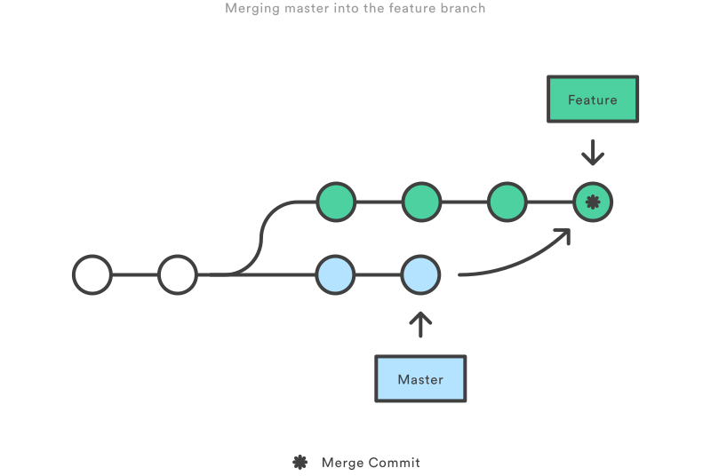

Merging vs. Rebasing
Visión conceptual
Lo primero que debe entenderse sobre git rebase es que resuelve el mismo problema que git merge. Ambos comandos están diseñados para integrar cambios de un branch a otro branch; solo lo hacen de maneras muy diferentes.
Considere lo que sucede cuando comienza a trabajar en una nueva característica en un branch dedicado para tal fin, luego otro miembro del equipo actualiza el branch master con nuevos commits. Esto da como resultado una historia bifurcada, que debería ser familiar para cualquiera que haya usado Git como herramienta de colaboración.

Ahora, digamos que los nuevos commits en el branch master son relevantes para la función en la que se está trabajando en el otro branch. Para incorporar los nuevos commits en su branch de características, tiene dos opciones: merge o rebase.
Opción merge
La opción más fácil es fusionar el branch master en el branch características usando:
git checkout feature
git merge masterO condensarlo en una línea:
git merge master featureEsto crea un nueva “merge commit” en el branch características que vincula las historias de ambos branches, dándole una estructura de bifurcación que se ve así:

La fusión es agradable porque es una operación no destructiva. Las ramas existentes no se modifican de ninguna manera. Esto evita todas las trampas potenciales del rebasamiento (discutidas a continuación).
Por otro lado, esto también significa que la rama características tendrá un commit de fusión extraño cada vez que necesite incorporar cambios ascendentes. Si el master es muy activo, esto puede contaminar un poco la historia de su rama características. Si bien es posible mitigar este problema con las opciones avanzadas de git log, puede dificultar que otros desarrolladores comprendan el historial del proyecto.
Opción rebase
Como alternativa a la fusión, puede volver a establecer la base de la rama características en la rama master mediante los siguientes comandos:
git checkout feature
git rebase masterEsto mueve toda la rama características para que comience al inicio de la rama master, incorporando efectivamente todos los nuevos commits en el master. Pero, en lugar de usar un merge commit, rebasing vuelve a escribir el historial del proyecto creando commits nuevos para cada commit en la rama master.

El mayor beneficio de rebase es que obtiene un historial de proyectos mucho más limpio. Primero, elimina los innecesarios merge commits requeridos por git merge. En segundo lugar, como puede ver en el diagrama anterior, rebase también da como resultado un historial de proyecto perfectamente lineal: puede seguir la punta de característica hasta el comienzo del proyecto sin ninguna bifurcación. Esto facilita navegar por su proyecto con comandos como git log, git bisect y `gitk.
Pero, hay dos compensaciones para este prístino historial de commits: seguridad y trazabilidad. Si no sigue la regla de oro de rebase, volver a escribir el historial del proyecto puede ser potencialmente catastrófico para su flujo de trabajo de colaboración. Y, lo que es menos importante, el rebasamiento pierde el contexto proporcionado por una merge commit –no se puede ver cuando se incorporaron los cambios de flujo ascendente en `característica.
Rebase interactivo
El rebasamiento interactivo le da la oportunidad de alterar los commits a medida que se mueven al nuevo branch. Esto es incluso más poderoso que un rebase automático, ya que ofrece un control completo sobre el historial de commits del branch. Normalmente, esto se usa para limpiar un historial desordenado antes de fusionar el branch características en master.
Para comenzar una sesión de rebase interactiva, adhiera la opción i al comando git rebase:
git checkout feature
git rebase -i masterEsto abrirá un editor de texto que enumera todos los commits que están a punto de ser movidas:
pick 33d5b7a Message for commit #1
pick 9480b3d Message for commit #2
pick 5c67e61 Message for commit #3Esta lista define exactamente cómo se verá el branch después de que se realice el rebase. Al cambiar el comando de selección y/o reordenar las entradas, puede hacer que el historial del branch tenga el aspecto que desee. Por ejemplo, si el segundo commit corrige un pequeño problema en el primer commit, puede condensarlos en un solo commit con el comando fixup:
pick 33d5b7a Message for commit #1
fixup 9480b3d Message for commit #2
pick 5c67e61 Message for commit #3`Cuando guarda y cierra el archivo, Git realizará el rebase de acuerdo con sus instrucciones, lo que da como resultado el historial del proyecto que se ve así:

La eliminación de commits insignificantes como este hace que la historia de característica sea mucho más fácil de entender. Esto es algo que git merge simplemente no puede hacer.